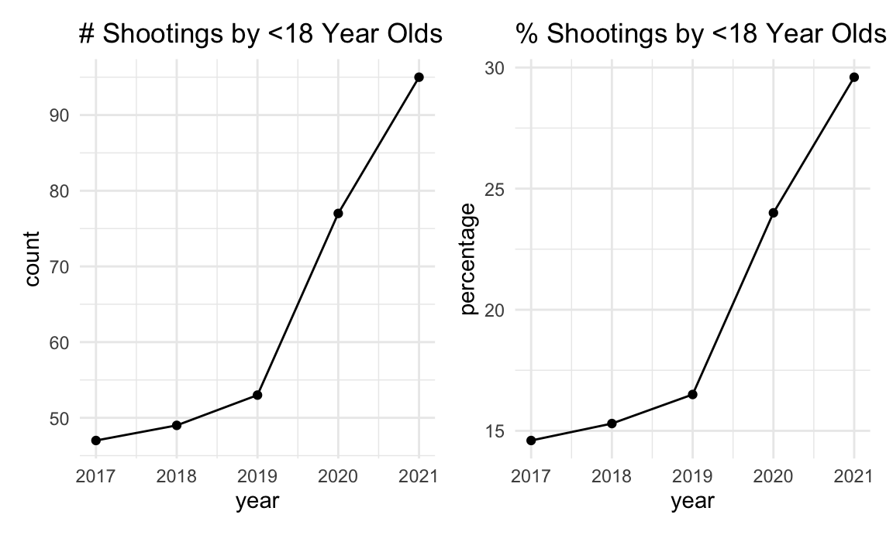

nypd_shooting_df =
read_csv("data/nypd_shooting_data.csv") %>%
janitor::clean_names() %>%
separate(col = occur_date, into = c("month", "day", "year"), sep = "/") %>%
separate(col = occur_time, into = c("hour", "minute", "second"), sep = ":") %>%
mutate(across(where(is.character), tolower),
month = as.numeric(month),
month_name = recode(month, "1" = "january", "2" = "february", "3" = "march", "4" = "april", "5" = "may", "6" = "june", "7" = "july", "8" = "august", "9" = "september", "10" = "october", "11" = "november", "12" = "december"),
day = as.numeric(day),
year = as.numeric(year),
hour = as.numeric(hour),
minute = as.numeric(minute),
second = as.numeric(second),
minute_calc = hour * 60 + minute,
boro = as.factor(boro),
boro = fct_relevel(boro, "manhattan", "brooklyn", "bronx", "queens", "staten island")) %>%
select(incident_key, year, month_name, month, day, hour, minute, second, minute_calc, everything())Here is a summary of the overall demographics of the perpetrators and
victims involved in NYC shootings, including age, sex, and
race/ethnicity. There were a total of 25596 shootings from 2006 to 2021
reported by the NYPD. Overall, we see that the majority of victims
and perpetrators were young (aged 18-44 years), black, and
males.
*Of note, these data included many NA entries particularly for
perpetrators, so analyses were conducted on available data. For the
purposes of simplifying race/ethnicity categorization, we collapsed
white Hispanic and black Hispanic individuals into a single category
titled “Hispanic”.
48.8% NA
nypd_shooting_df %>%
mutate(
perp_age_group = na_if(perp_age_group, 1020),
perp_age_group = na_if(perp_age_group, 224),
perp_age_group = na_if(perp_age_group, 940),
perp_age_group = na_if(perp_age_group, "unknown"),
) %>%
drop_na(perp_age_group) %>%
group_by(perp_age_group) %>%
summarise(
count = n()) %>%
mutate(
percentage = count / sum(count) * 100,
percentage = round(percentage, digits = 1)) %>%
knitr::kable()| perp_age_group | count | percentage |
|---|---|---|
| <18 | 1463 | 11.2 |
| 18-24 | 5844 | 44.6 |
| 25-44 | 5202 | 39.7 |
| 45-64 | 535 | 4.1 |
| 65+ | 57 | 0.4 |
42.2% NA
nypd_shooting_df %>%
mutate(
perp_sex = na_if(perp_sex, "u")) %>%
drop_na(perp_sex) %>%
group_by(perp_sex) %>%
summarise(
count = n()) %>%
mutate(
percentage = count / sum(count) * 100,
percentage = round(percentage, digits = 1)) %>%
knitr::kable()| perp_sex | count | percentage |
|---|---|---|
| f | 371 | 2.5 |
| m | 14416 | 97.5 |
43.5% NA
nypd_shooting_df %>%
mutate(
perp_race = recode(perp_race, "black hispanic" = "hispanic", "white hispanic" = "hispanic"),
perp_race = na_if(perp_race, "unknown")
) %>%
drop_na(perp_race) %>%
group_by(perp_race) %>%
summarise(
count = n()) %>%
mutate(
percentage = count / sum(count) * 100,
percentage = round(percentage, digits = 1)) %>%
knitr::kable()| perp_race | count | percentage |
|---|---|---|
| american indian/alaskan native | 2 | 0.0 |
| asian / pacific islander | 141 | 1.0 |
| black | 10668 | 73.8 |
| hispanic | 3367 | 23.3 |
| white | 272 | 1.9 |
0.2% NA
nypd_shooting_df %>%
group_by(vic_age_group) %>%
mutate(
vic_age_group = na_if(vic_age_group, "unknown")
) %>%
summarise(
count = n()) %>%
mutate(
percentage = count / sum(count) * 100,
percentage = round(percentage, digits = 1)) %>%
knitr::kable()| vic_age_group | count | percentage |
|---|---|---|
| <18 | 2681 | 10.5 |
| 18-24 | 9604 | 37.5 |
| 25-44 | 11386 | 44.5 |
| 45-64 | 1698 | 6.6 |
| 65+ | 167 | 0.7 |
| NA | 60 | 0.2 |
0.04% NA
nypd_shooting_df %>%
group_by(vic_sex) %>%
mutate(
vic_sex = na_if(vic_sex, "u")) %>%
drop_na(vic_sex) %>%
summarise(
count = n()) %>%
mutate(
percentage = count / sum(count) * 100,
percentage = round(percentage, digits = 1)) %>%
knitr::kable()| vic_sex | count | percentage |
|---|---|---|
| f | 2403 | 9.4 |
| m | 23182 | 90.6 |
0.3% NA
nypd_shooting_df %>%
mutate(
vic_race = recode(vic_race, "black hispanic" = "hispanic", "white hispanic" = "hispanic"),
vic_race = na_if(vic_race, "unknown")
) %>%
drop_na(vic_race) %>%
group_by(vic_race) %>%
summarise(
count = n()) %>%
mutate(
percentage = count / sum(count) * 100,
percentage = round(percentage, digits = 1)) %>%
knitr::kable()| vic_race | count | percentage |
|---|---|---|
| american indian/alaskan native | 9 | 0.0 |
| asian / pacific islander | 354 | 1.4 |
| black | 18281 | 71.6 |
| hispanic | 6227 | 24.4 |
| white | 660 | 2.6 |
We were also curious to see which race/ethnicity group suffered the highest mortality from shooting incidents from 2006 to 2021. The animation below shows that black individuals had the highest percentage of murders from shooting incidents overall, and by year, then Hispanics.
scatter_df =
nypd_shooting_df%>%
mutate(
vic_race = recode(vic_race, "black hispanic" = "hispanic", "white hispanic" = "hispanic", "asian / pacific islander" = "asian_pacific"),
vic_race = na_if(vic_race, "unknown")) %>%
filter (statistical_murder_flag == "TRUE",
vic_race != "NA") %>%
relocate(vic_race, year) %>%
group_by(year, vic_race) %>%
count() %>%
ungroup(year, vic_race)
relocate_race =
nypd_shooting_df %>%
relocate(vic_race, year) %>%
mutate(
vic_race = recode(vic_race, "black hispanic" = "hispanic", "white hispanic" = "hispanic", "asian / pacific islander" = "asian_pacific"),
vic_race = na_if(vic_race, "unknown")) %>%
filter (statistical_murder_flag == "TRUE",
vic_race != "NA")
anim_scatter =
left_join(relocate_race, scatter_df, by = c("vic_race" = "vic_race", "year" = "year"))
by_year =
scatter_df %>%
ungroup() %>%
group_by(year) %>%
pivot_wider(
names_from = vic_race,
values_from = n) %>%
mutate(
totalsbyyear =
as.numeric(asian_pacific) + as.numeric(black) +as.numeric(hispanic) + as.numeric(white)) %>%
pivot_longer(
asian_pacific:white,
names_to = "vic_race",
values_to = "n") %>%
select (vic_race,year, n, totalsbyyear)
anim_scatter2 =
left_join(anim_scatter, by_year, by =c("year" = "year", "vic_race" = "vic_race","n" = "n"))
anim_scatter_plot =
anim_scatter2 %>%
group_by(vic_race, year) %>%
mutate(
percentage= (n/totalsbyyear * 100)) %>%
ggplot(aes(x = year, y = percentage, color = vic_race)) +
geom_line() +
geom_point() +
labs(title = "Percentages of Shootings Resulting in Murders by Race/Ethnicity",
x = "Year",
y = "Percentage") +
transition_reveal(year)
animate(anim_scatter_plot, renderer = gifski_renderer())On April 10, 2017, New York State raised the age of criminal responsibility to 18 years of age, ensuring that young people in New York who commit non-violent crimes receive the intervention and evidence-based treatment they need. As of October 2019, New York no longer automatically prosecutes 16- and 17-year-olds as adults. This is known as the “Raise the Age” law. There has been concern that this new policy has resulted in a backlash of increasing NYC teen shootings.
We sought to explore this trend and see if it holds true according to this dataset. It is sobering to see that the number and percentage of shooters and victims aged <18 years in NYC has approximately doubled in the five years since “Raise the Age” in our analysis.
number_youthperp =
nypd_shooting_df %>%
mutate(
perp_age_group = na_if(perp_age_group, 1020),
perp_age_group = na_if(perp_age_group, 224),
perp_age_group = na_if(perp_age_group, 940),
perp_age_group = na_if(perp_age_group, "unknown"),
) %>%
drop_na(perp_age_group) %>%
filter(year >= 2017, perp_age_group == "<18") %>%
group_by(perp_age_group, year) %>%
summarise(
count = n()) %>%
mutate(
percentage = count / sum(count) * 100,
percentage = round(percentage, digits = 1)) %>%
ggplot(aes(x = year, y = count)) +
geom_point() + geom_line() +
labs(title = "# Shootings by <18 Year Olds")
percent_youthperp =
nypd_shooting_df %>%
mutate(
perp_age_group = na_if(perp_age_group, 1020),
perp_age_group = na_if(perp_age_group, 224),
perp_age_group = na_if(perp_age_group, 940),
perp_age_group = na_if(perp_age_group, "unknown"),
) %>%
drop_na(perp_age_group) %>%
filter(year >= 2017, perp_age_group == "<18") %>%
group_by(perp_age_group, year) %>%
summarise(
count = n()) %>%
mutate(
percentage = count / sum(count) * 100,
percentage = round(percentage, digits = 1)) %>%
ggplot(aes(x = year, y = percentage)) +
geom_point() + geom_line() +
labs(title = "% Shootings by <18 Year Olds")
number_youthperp + percent_youthperp
number_youthvic =
nypd_shooting_df %>%
group_by(vic_age_group) %>%
mutate(
vic_age_group = na_if(vic_age_group, "unknown")
) %>%
drop_na(vic_age_group) %>%
filter(year >= 2017, vic_age_group == "<18") %>%
group_by(vic_age_group, year) %>%
summarise(
count = n()) %>%
mutate(
percentage = count / sum(count) * 100,
percentage = round(percentage, digits = 1)) %>%
ggplot(aes(x = year, y = count)) +
geom_point() + geom_line() +
labs(title = "# Shooting Victims <18 Years")
percent_vicyouth =
nypd_shooting_df %>%
group_by(vic_age_group) %>%
mutate(
vic_age_group = na_if(vic_age_group, "unknown")
) %>%
drop_na(vic_age_group) %>%
filter(year >= 2017, vic_age_group == "<18") %>%
group_by(vic_age_group, year) %>%
summarise(
count = n()) %>%
mutate(
percentage = count / sum(count) * 100,
percentage = round(percentage, digits = 1)) %>%
ggplot(aes(x = year, y = percentage)) +
geom_point() + geom_line() +
labs(title = "% Shooting Victims <18 Years")
number_youthvic + percent_vicyouth